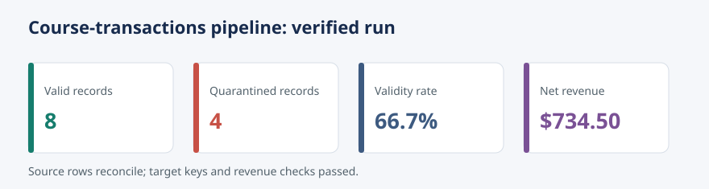

Audience: Data practitioners completing the Databases, SQL, and Data Pipelines guide
Theme: A reliable batch pipeline from raw input to an auditable analytical table
Learning objectives
By the end of this chapter, you will be able to:
assemble extraction, validation, transformation, and loading stages;
make a batch pipeline deterministic, idempotent, and observable;
quarantine invalid records without silently losing evidence;
verify warehouse outputs and operational metadata;
evaluate the pipeline against reliability and governance requirements; and
distinguish a successful process exit from a trustworthy data product.
The case study
The CDI Learning Platform receives a daily export of course transactions. Analysts need a table that reports net revenue by transaction, course, customer segment, and transaction date. The source is deliberately small enough to inspect, but it contains conditions that production pipelines must handle:
duplicate transaction identifiers;
malformed timestamps;
missing customer identifiers;
unsupported transaction statuses;
negative quantities; and
reruns of the same input file.
The pipeline treats the raw file as immutable evidence. Valid rows are standardized and loaded into SQLite; invalid rows are written to a quarantine file with explicit reasons. Every run also emits a machine-readable manifest and appends one record to an operational run ledger.
Code
flowchart TD A["Raw CSV extract"] --> B["Extract and fingerprint"] B --> C["Validate contract"] C -->|valid| D["Transform fields"] C -->|invalid| E["Quarantine CSV"] D --> F["Idempotent SQLite load"] F --> G["Reconciliation and checks"] G --> H["Run manifest and metrics"]
flowchart TD
A["Raw CSV extract"] --> B["Extract and fingerprint"]
B --> C["Validate contract"]
C -->|valid| D["Transform fields"]
C -->|invalid| E["Quarantine CSV"]
D --> F["Idempotent SQLite load"]
F --> G["Reconciliation and checks"]
G --> H["Run manifest and metrics"]
Repository artifacts
The chapter package follows repository-relative paths.
Path
Purpose
data/raw/18-course-transactions.csv
Immutable example source export
configs/18-pipeline.json
Dataset contract and runtime paths
scripts/python/18-run-end-to-end-pipeline.py
Extract, validate, transform, load, and verify
scripts/bash/18-run-end-to-end-pipeline.sh
Repository-root-aware execution wrapper
tests/test_18_end_to_end_pipeline.py
Unit and integration tests
data/processed/18-valid-transactions.csv
Valid standardized rows
data/quarantine/18-invalid-transactions.csv
Rejected rows and reasons
data/warehouse/18-learning-platform.sqlite
SQLite analytical warehouse
results/18-pipeline-run.json
Latest run manifest
results/18-pipeline-run-history.csv
Append-only operational ledger
results/figures/18-pipeline-run-summary.svg
Portable run-summary plot
Generated outputs are included so the chapter can be read immediately. Running the pipeline recreates them from the source data.
1. Define the contract before moving data
The configuration file separates business rules from control flow. It declares the required columns, accepted statuses, currency, input location, and output locations. The pipeline still validates the configuration itself: a missing key should fail early rather than produce a partially correct dataset.
The transaction contract is:
Field
Rule
Standardized representation
transaction_id
Required and unique within the extract
Text
transaction_at
ISO 8601 timestamp
UTC timestamp text
customer_id
Required
Text
course_id
Required
Text
customer_segment
One of individual, organization
Lowercase text
status
One of completed, refunded
Lowercase text
quantity
Positive integer
Integer
unit_price
Non-negative decimal
Decimal text rounded to two places
Completed transactions produce positive net revenue. Refunds produce negative net revenue:
Money is parsed with Decimal, not binary floating-point arithmetic. The warehouse stores integer cents, which makes reconciliation exact.
2. Extract without mutating the source
Extraction performs three control tasks before parsing business fields:
confirm that the input exists;
compute its SHA-256 fingerprint; and
confirm that its header matches the required schema.
The fingerprint is a compact identity for the exact source bytes. It connects the manifest, warehouse run ledger, and input file without renaming or editing the raw export. An identical rerun therefore has the same fingerprint.
3. Validate and quarantine explicitly
Validation is row-oriented so that one bad record does not hide the state of the rest of the batch. Each row is either accepted once or quarantined once. A rejected row carries one or more pipe-separated reason codes such as:
missing_customer_id;
invalid_transaction_at;
quantity_must_be_positive; or
duplicate_transaction_id.
This creates an important reconciliation invariant:
Quarantine is not deletion. It is an evidence-preserving workflow for investigation, correction, and controlled replay.
4. Transform valid records
Transformation normalizes categorical values, converts timestamps to UTC, derives transaction_date, and calculates net_revenue_cents. It also records source_row_number, source_sha256, and pipeline_run_id. These lineage fields make it possible to trace a warehouse record to a precise source row and execution.
The processed CSV provides a transparent interchange artifact. The SQLite table provides typed storage and SQL access. Both are produced from the same validated in-memory records, avoiding divergent business logic.
5. Load idempotently
The target table uses transaction_id as its primary key and an upsert as its load strategy. Reprocessing the same batch updates the same business keys instead of appending duplicates. The load occurs inside a database transaction, so either the batch and its run metadata commit together or neither does.
Idempotency does not mean that every metric stays unchanged. The second execution has a different run identifier and timestamp, and its manifest records a new operational event. The business table, however, converges to the same state for the same input.
all loaded transaction identifiers are present in the target;
the source net-revenue total equals the corresponding warehouse total; and
no null business keys exist in the loaded records.
A process that exits with code zero but fails reconciliation is not successful. The script raises an exception, rolls back when appropriate, and returns a non-zero exit status when an invariant fails.
The supplied run produces the following expected results:
Metric
Expected value
Source rows
12
Valid rows
8
Quarantined rows
4
Validity rate
66.7%
Net revenue
$734.50
Warehouse rows after load
8
Reconciliation status
passed

Pipeline run summary: accepted and quarantined records, validity rate, and signed net revenue.
7. Observe the run
The manifest records the facts needed by both people and monitoring systems:
run ID, start time, finish time, and duration;
pipeline and schema versions;
source path, byte size, and SHA-256 fingerprint;
extracted, valid, quarantined, and loaded counts;
validity rate and net revenue;
reconciliation checks; and
final status.
The latest-run JSON supports dashboards and incident diagnosis. The CSV history supports trend analysis across runs. In a production orchestrator, the same metrics would also be emitted to centralized logs and monitoring infrastructure.
The script accepts --run-id for reproducible demonstrations and --no-history for tests or disposable runs.
Inspecting the warehouse
Use Python when the SQLite command-line client is unavailable:
import sqlite3with sqlite3.connect("data/warehouse/18-learning-platform.sqlite") as connection: rows = connection.execute(""" SELECT customer_segment, ROUND(SUM(net_revenue_cents) / 100.0, 2) AS net_revenue FROM fact_course_transactions GROUP BY customer_segment ORDER BY customer_segment """).fetchall()print(rows)
Expected result:
[('individual', 314.5), ('organization', 420.0)]
Failure and recovery exercises
Exercise 1: Schema drift
Rename unit_price in a copy of the raw file. Run the pipeline against the copy and confirm that extraction fails before the warehouse is modified. Explain why guessing a replacement column would be unsafe.
Exercise 2: Correct and replay quarantine
Correct one invalid row in a new source file, give it a unique transaction identifier, and rerun. Confirm that the business table gains exactly one row and that reconciliation still passes.
Exercise 3: Prove idempotency
Run the original batch twice. Query the fact-table count after each run. The run ledger should grow, but the fact table should remain at eight rows.
Exercise 4: Add an operational threshold
Fail the pipeline when the validity rate falls below a configurable threshold. Decide whether that rule belongs before or after loading and justify the transaction boundary.
Production hardening decisions
This local pipeline demonstrates the reliability pattern, but scale changes the implementation choices.
Concern
Case-study choice
Production extension
Source
Local CSV
Object storage, API, CDC, or message stream
Execution
One Python process
Managed orchestrator with retries and SLAs
Storage
SQLite
Transactional warehouse or lakehouse
Secrets
None required
Secret manager and workload identity
Schema
JSON contract
Versioned schema registry and compatibility policy
Quality
Deterministic row rules
Dataset-level expectations and anomaly detection
Observability
JSON, CSV, SVG
Central logs, metrics, traces, alerts, and dashboards
Recovery
Safe rerun
Checkpoints, partition replay, and backfill controls
The invariant stays the same: a pipeline must make data movement explainable, repeatable, and verifiable.
Governance review
Before promoting the pipeline, answer these questions:
Who owns the source contract and approves changes?
How long should raw, quarantine, and run-history artifacts be retained?
Which fields contain personal or sensitive information?
Who may query the warehouse and who may inspect quarantine?
How are corrections approved and replayed?
Which run evidence is required for an audit?
This case study uses synthetic identifiers and contains no direct personal data. Real customer data would require documented classification, least-privilege access, encryption, retention limits, and deletion procedures.
Reliability acceptance checklist
Key takeaways
End-to-end reliability comes from connected controls, not from any single tool.
A source fingerprint and row-level lineage make results traceable.
Quarantine preserves evidence while allowing valid data to progress.
Primary keys and upserts make business-state reruns idempotent.
Reconciliation converts pipeline completion into a testable claim.
Operational metadata is part of the data product, not an afterthought.
Chapter summary
This case study assembled a complete batch pipeline around a small transaction dataset. The implementation fingerprints the source, validates a declared contract, quarantines invalid rows, transforms money and timestamps deterministically, loads SQLite with idempotent upserts, and verifies record counts and revenue. Tests, a run manifest, a history ledger, and a summary plot demonstrate how engineering, observability, and governance work together. The same control pattern can be carried from a local teaching pipeline to a production platform even when the underlying storage and orchestration technologies change.